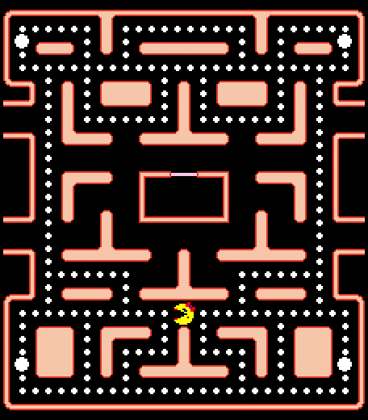
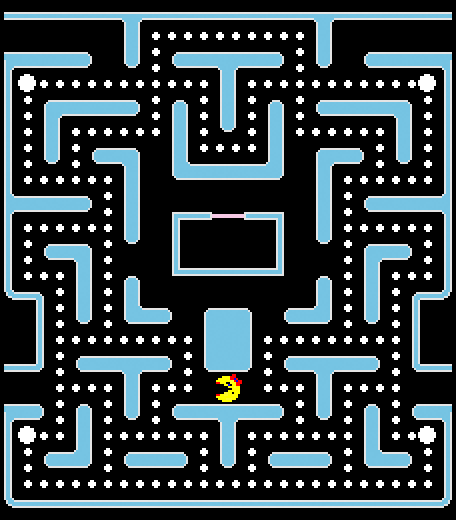
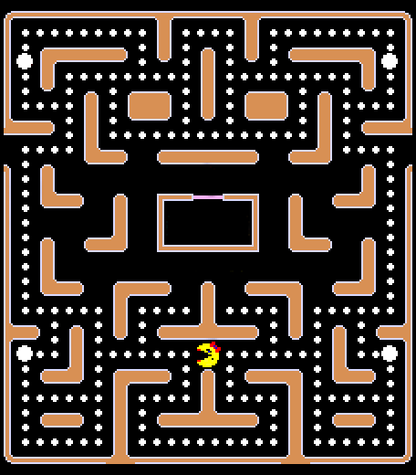
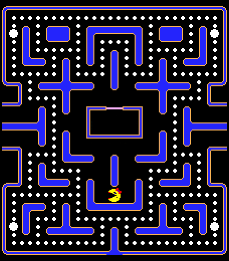
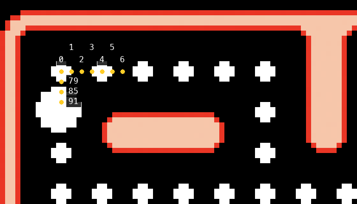

Antes de empezar
Del Campus Virtual te descargas dos archivos:
-
ICI-MsPacManEngine.zip, el simulador. Es el mismo para las prácticas de la primera mitad del curso, de la 0 a la 4, así que se descarga una sola vez. Y no se modifica nunca. -
ICI-Practica0.zip, el proyecto de esta práctica, que ya trae un ejemplo funcionando. En cada práctica nueva se publicará otro zip como este.
Los dos se descomprimen y se importan en Eclipse, el simulador primero, porque el proyecto de la
práctica lo referencia por su nombre. El cómo, paso a paso y con los errores típicos, está en la
guía Ms. Pac-Man en Eclipse. Cuando
ExecutorTest te abra una ventana con el laberinto, estás listo para empezar.
Ten a mano también la referencia de la clase
Game, que es donde vive toda la información
del estado de la partida.
Ms. Pac-Man
Ms. Pac-Man es un arcade de principios de los ochenta. La señora Pac-Man tiene que conseguir el máximo número de puntos huyendo de cuatro fantasmas, y las reglas son sencillas: comerse todas las píldoras de la pantalla, las normales y las de poder, momento en el que se pasa al siguiente nivel. Mientras tanto, los cuatro fantasmas recorren el laberinto intentando capturarla.

Esa imagen sale del propio simulador. Las 220 píldoras pequeñas son los puntos que hay que comerse para acabar el nivel; las cuatro grandes de las esquinas son las de poder, y la caja del centro es la cárcel de los fantasmas.
| Fantasma | Color | Turnos de cárcel al empezar | En el juego original |
|---|---|---|---|
| Blinky | Rojo | 40 | Muy rápido, y con la habilidad de encontrar a Pac-Man en el escenario. |
| Pinky | Rosa | 60 | Intenta anticiparse y cortar el paso. |
| Inky | Cian | 80 | Muy lento; muchas veces evita el encuentro con Pac-Man. |
| Sue | Naranja | 100 | Errático, alterna persecución y merodeo. |
Los comportamientos de la última columna son los del arcade y no están programados aquí: en el
simulador los cuatro los decide tu controlador. La única diferencia que trae el motor entre
ellos es el tiempo que pasan en la cárcel al empezar el nivel, y el nombre del cuarto, que en
el enumerado GHOST es SUE y no Clyde.
El laberinto por dentro
Tres cosas del mapa condicionan cualquier estrategia que escribas, y se ven mejor marcadas encima del laberinto:

- Los cruces, en amarillo. En este laberinto hay 38, y son los únicos sitios donde una decisión cambia algo: en un pasillo sólo se puede seguir.
- Los túneles, en azul. Uno o dos por laberinto, unen el borde izquierdo con el derecho a la misma altura. Cruzarlos cuesta un solo paso, así que un fantasma que en la pantalla está al otro lado del mapa puede estar pegado a ti.
- La cárcel, en rosa, y su puerta, en verde. Los fantasmas empiezan encerrados y aparecen siempre por ese nodo.
Cerca de las esquinas hay cuatro puntos más grandes de lo normal, las power pills (píldoras de poder). Proporcionan a Pac-Man, durante un tiempo limitado, la habilidad de comerse ella a los fantasmas, que se vuelven todos azules mientras dura, y después todo vuelve a ser como al principio. Una vez comidos, los fantasmas se regeneran en casa, la caja situada en el centro del laberinto.
Con lo cual un fantasma pasa la partida dando vueltas por estos cuatro estados, y en cada uno se comporta de forma distinta:
- Los 200 turnos de comestible bajan un 10% en cada nivel, y el multiplicador de puntos vuelve a empezar con cada píldora de poder que te comas.
- Un fantasma comestible se da la vuelta en el turno en el que te comes la píldora, y va a media velocidad mientras dura.
-
Los que están dentro de la cárcel no se enteran de la píldora: salen normales.
getGhostLairTimete dice cuántos turnos le quedan a cada uno, así que puedes saber cuándo va a salir el siguiente.
Cuándo te comen y cuándo comes tú
El contacto no es caer en la misma casilla. Cuando todos han terminado de moverse, el motor mide la distancia por los pasillos entre Ms. Pac-Man y cada fantasma: si es de 2 nodos o menos, se han tocado.
| Estado del fantasma | Qué pasa al tocarse |
|---|---|
| Comestible | Te lo comes: puntos, y se va derecho a la cárcel con su contador puesto. |
| Normal | Pierdes una vida. Los cuatro fantasmas vuelven a la cárcel, Ms. Pac-Man reaparece y el mapa conserva las píldoras que ya te habías comido. |
| En la cárcel | Nada: su nodo no está conectado con el resto del laberinto. |
El motor recorre los cuatro fantasmas. Si uno comestible está a tiro te lo apunta, y si además hay otro normal igual de cerca, pierdes la vida de todas formas. Estar rodeado con la píldora de poder a medias no es seguro.
Niveles y vidas
El nivel se acaba cuando no queda ninguna píldora, ni normal ni de poder. Entonces se pasa al siguiente de los cuatro laberintos, en ciclo, y se reponen todas las píldoras. Los niveles no se terminan: se repiten los cuatro mapas hasta que se acaba el tiempo o las vidas.



| Regla | Detalle |
|---|---|
| Vidas | Empiezas con 3. A los 10 000 puntos te dan una más, una sola vez en toda la partida. |
| Perder una vida | Se recolocan los cinco personajes y sigue el mismo nivel, con las píldoras que quedaran. |
| Fin del nivel | Cuando no queda ninguna píldora. Se cambia de laberinto y se reponen. |
| Fin de la partida | Al quedarte sin vidas, o al llegar al límite de turnos. Si se acaba el tiempo, cada vida que te sobre suma 800 puntos. |
El Executor se configura con un límite de turnos, y en clase y en la corrección son
4000: unos dos minutos y medio de juego. Casi nunca vas a ver el cuarto laberinto, así que
optimiza para los primeros niveles.
El simulador
En la primera mitad del curso utilizaremos una adaptación del simulador creado para la competición
Ms. Pac-Man vs Ghosts, que se celebra anualmente en la
Conference on Computational Intelligence and Games. Debes usar el que viene en
ICI-MsPacManEngine.zip, importado como explica la
guía de instalación: es el que se usa para corregir.
Sus características:
- Ejecución con o sin interfaz gráfica.
- Ejecución esperando al controlador, o con reloj de 40 ms por tick.
- Posibilidad de crear comportamiento tanto global como individual para los fantasmas.
- Visibilidad parcial.
- Repetición de partidas y generación de logs y estadísticas.
- Cuatro laberintos distintos, que se alternan al pasar de nivel.
En el simulador, Ms. Pac-Man y los fantasmas se mueven a la misma velocidad: un nodo por turno. Las estrategias que dependen de correr más que el otro no funcionan aquí, hay que jugar con la topología del laberinto. La única excepción es un fantasma comestible, que se queda quieto uno de cada dos turnos y por eso no se te puede escapar.
Cómo avanza la partida
La partida no es continua: avanza a saltos, en turnos, y en cada uno pasa siempre lo mismo. Tu controlador se llama una vez por turno.
- El motor entrega a cada controlador una copia del estado de ese turno.
- Los dos deciden a la vez, sin ver el movimiento del otro.
- Mueve a Ms. Pac-Man, que se come la píldora del nodo en el que cae.
- Mueve a los fantasmas a los que toque mover.
- Con todos colocados, comprueba los contactos, descuenta los contadores de comestible y de cárcel, y mira si el nivel o la partida se han acabado.
Sobre las velocidades: todos se mueven un nodo por turno, salvo los fantasmas en la cárcel, que no se mueven, y los comestibles, que se quedan quietos uno de cada dos turnos.
- Persiguiendo, un fantasma no corre más que tú: no te alcanza por detrás, sólo te acorrala entre varios.
- Comestible, no se te escapa: le ganas un nodo cada dos turnos, así que uno que esté a diez nodos se caza en unos veinte turnos si el camino es directo.
El detalle de todo esto, con los métodos que devuelven cada dato, está en la
referencia de la clase Game.
Puntuación
| Acción | Puntos |
|---|---|
| Cada pill comida | 10 |
| Cada power pill | 50 |
| Primer fantasma comido | 200 |
| Segundo fantasma (la puntuación se dobla) | 400 |
| Tercer fantasma | 800 |
| Cuarto fantasma | 1 600 |
Dado un tablero con n pills, la máxima puntuación alcanzable es:
El multiplicador se reinicia con cada power pill, y hay cuatro por tablero: de ahí el factor 4. Comerse los cuatro fantasmas con cada píldora vale tanto como 1 200 pills, lo que dice bastante sobre dónde está el margen de mejora de un controlador.
A eso se le suman dos cosas que no dependen del tablero: una vida extra al llegar a 10 000 puntos, y 800 puntos por cada vida que te sobre si la partida termina por agotarse el tiempo.
La clase Executor
Es la clase encargada de ejecutar la simulación. Contiene métodos para lanzar el juego de distintas formas:
| Método | Qué hace |
|---|---|
runGame(pacman, ghosts, delay) | El que vas a usar. Llama a tu controlador y espera a que devuelva; delay son los milisegundos de pausa entre turnos, para poder verlo. Devuelve la puntuación. |
runExperiment(…) | Varias partidas seguidas, también esperando a los controladores. Es el modo con el que se evalúan las prácticas. Devuelve Stats[]. |
runGameTimed(…) | Aquí sí hay reloj: cada controlador corre en su propio hilo y el juego avanza cada 40 ms con lo que haya. |
runGameTimedSpeedOptimised(…) | Igual, pero no espera los 40 ms si los dos controladores han terminado antes. |
runGameTimedRecorded(…) | Como el anterior, grabando la partida a un fichero. |
replayGame(…) | Repetición de una partida grabada. |
Según el método, obtendrás la puntuación de una partida o una serie de estadísticas. Las
estadísticas se guardan en objetos Stats, que ofrecen media, máximo, mínimo y
demás. Para la evaluación de las prácticas se realizarán varias simulaciones y se
utilizará la puntuación media obtenida, así que acostúmbrate a mirar la media y no una
partida suelta.
Creación del Executor
El ejecutor se construye con Executor.Builder, que permite configurar:
| Opción | Para qué sirve |
|---|---|
setPacmanPO / setGhostPO | Visibilidad parcial para Ms. Pac-Man y para los fantasmas. |
setSightLimit / setPOType | Límite de visibilidad y su tipo (línea recta, radial…). |
setGhostsMessage / setMessenger | Habilitan los mensajes entre fantasmas. |
setVisual | Activa la interfaz gráfica. |
setScaleFactor | Factor de escala de la interfaz gráfica. |
setTickLimit | Tiempo total de juego, en ticks. |
setTimeLimit | El plazo que se le anuncia al controlador, o sea el timeDue que recibe tu getMove. Por defecto, 40 ms. |
Ejemplo
Executor executor = new Executor.Builder()
.setTickLimit(4000)
.setGhostPO(false)
.setPacmanPO(false)
.setGhostsMessage(false)
.setVisual(true)
.setScaleFactor(3.0)
.build();Controladores
El comportamiento de Ms. Pac-Man se define extendiendo
pacman.controllers.PacmanController, que obliga a implementar
public MOVE getMove(Game game, long timeDue)
Este método se llama en cada ciclo de la simulación. Recibe información sobre el juego y el
tiempo límite para devolver el movimiento. Los movimientos posibles son UP,
RIGHT, DOWN, LEFT y NEUTRAL.
Una Ms. Pac-Man con movimientos aleatorios se implementaría así:
public final class MsPacManRandom extends PacmanController {
private Random rnd = new Random();
private MOVE[] allMoves = MOVE.values();
@Override
public MOVE getMove(Game game, long timeDue) {
return allMoves[rnd.nextInt(allMoves.length)];
}
}
El comportamiento de los fantasmas se implementa extendiendo la clase abstracta
pacman.controllers.GhostController. Esta es la interfaz a implementar si queremos
utilizar un único controlador para los cuatro fantasmas, y devuelve un mapa
donde se define el movimiento de cada uno (EnumMap<GHOST, MOVE>):
public final class GhostsRandom extends GhostController {
private EnumMap<GHOST, MOVE> moves = new EnumMap<GHOST, MOVE>(GHOST.class);
private MOVE[] allMoves = MOVE.values();
private Random rnd = new Random();
@Override
public EnumMap<GHOST, MOVE> getMove(Game game, long timeDue) {
moves.clear();
for (GHOST ghostType : GHOST.values()) {
if (game.doesGhostRequireAction(ghostType)) {
moves.put(ghostType, allMoves[rnd.nextInt(allMoves.length)]);
}
}
return moves;
}
}
En runGame y en runExperiment, que son el modo de clase y el de
evaluación, el motor llama a tu getMove y espera. Nadie corta tu
método ni descarta tu movimiento: si tardas 300 ms, la partida va lenta y nada más. El
timeDue que recibes es sólo el plazo que te anuncian para que te controles tú.
Los modos runGameTimed… sí llevan reloj: ahí cada controlador corre en su propia
hebra y el juego avanza cada 40 ms con el último movimiento que devolviste,
no con el que estabas calculando. Y mientras esa hebra sigue trabajando no se lanza otra, así que
un cálculo de 200 ms son cinco turnos decididos por inercia.
El presupuesto importa igual, porque la evaluación son muchas partidas de 4000 turnos cada una.
Y devuelve siempre un MOVE, aunque sea MOVE.NEUTRAL: un
null el motor lo descarta y sigue recto.
Conviene además sobrescribir getName() devolviendo el nombre de tu controlador: es
lo que aparece en los logs y las estadísticas, y ahorra mucho tiempo cuando comparas
varias versiones.
Visualización
El simulador ofrece métodos para pintar información sobre el laberinto, y son la mejor
herramienta de depuración que tienes: GameView.addLines() dibuja una línea entre dos
puntos y GameView.addPoints() dibuja los puntos de un camino dado. Ambos son
estáticos, se llaman desde dentro de getMove y, si la ventana no está abierta, no
hacen nada, así que puedes dejarlos puestos sin que lastren la evaluación:
// campos de la clase, con java.awt.Color importado
private Random rnd = new Random();
private MOVE[] allMoves = MOVE.values();
private Color[] colours = { Color.RED, Color.PINK, Color.CYAN, Color.ORANGE };
public MOVE getMove(Game game, long timeDue) {
// Líneas hacia las power pills
int[] activePowerPills = game.getActivePowerPillsIndices();
for (int i = 0; i < activePowerPills.length; i++)
GameView.addLines(game, Color.CYAN,
game.getPacmanCurrentNodeIndex(), activePowerPills[i]);
// Camino hacia cada fantasma
for (GHOST g : GHOST.values()) {
int ghost = game.getGhostCurrentNodeIndex(g);
int mspacman = game.getPacmanCurrentNodeIndex();
// GHOST es un enum: ordinal() da su posición en la declaración
// (BLINKY 0, PINKY 1, INKY 2, SUE 3), y por eso vale de índice
if (game.getGhostLairTime(g) <= 0)
GameView.addPoints(game, colours[g.ordinal()],
game.getShortestPath(ghost, mspacman));
}
return allMoves[rnd.nextInt(allMoves.length)];
}Lo que dibujes se borra en cada tick, así que las llamadas van dentro del método, no en el constructor.
La clase Game
Game contiene toda la información sobre el estado del juego, quizás demasiada y mal
documentada, además de distintas funciones auxiliares. Por eso hay en esta wiki una
referencia dedicada solo a esta clase:
léela antes del ejercicio 2.
El método que hace avanzar la partida es advanceGame(movimiento, movimientosDeFantasmas):
mueve a todo el mundo, resuelve las píldoras y los contactos y actualiza los contadores. No lo
llamas tú, lo llama el Executor una vez por tick. Como lo que recibes es una
copia del juego, sí puedes llamarlo sobre ella para simular, y eso será útil más adelante en el
curso.
El laberinto se representa como un grafo de nodos. Un nodo no es una casilla del dibujo, es un paso: a velocidad normal cada personaje cambia de nodo una vez por turno, y entre dos píldoras seguidas hay cuatro nodos. El número de un nodo es su posición en la lista del laberinto, que va por filas.

Casi toda la API habla de índices de nodo (int). Las distancias se piden con una métrica de
Constants.DM: PATH cuenta los pasos por los pasillos y es la que
quieres, mientras que EUCLID y MANHATTAN miden sobre las coordenadas y
atraviesan las paredes. Las distancias y los caminos con PATH están
precalculados al cargar el laberinto, así que consultarlos es barato.
Los métodos que usarás en esta práctica
| Método | Devuelve |
|---|---|
getPacmanCurrentNodeIndex() | Índice del nodo donde está Ms. Pac-Man. |
getGhostCurrentNodeIndex(GHOST) | Índice del nodo de un fantasma. |
isGhostEdible(GHOST) | Si ese fantasma es comestible ahora mismo. |
getGhostEdibleTime(GHOST) | Ticks que le quedan de comestible. |
getGhostLairTime(GHOST) | Ticks que le quedan encerrado en casa. Si es > 0, no está en el laberinto. |
doesGhostRequireAction(GHOST) | Si ese fantasma necesita una decisión en este tick. |
getActivePillsIndices() | Pills que quedan por comer. |
getActivePowerPillsIndices() | Power pills que quedan. |
getDistance(desde, hasta, DM) | Distancia entre dos nodos con la métrica elegida. |
getShortestPathDistance(desde, hasta) | Distancia real por el laberinto. |
getClosestNodeIndexFromNodeIndex(desde, int[], DM) | El más cercano de un conjunto de nodos. Ideal para «la pill más próxima». |
getApproximateNextMoveTowardsTarget(desde, hasta, últimoMov, DM) | Movimiento aproximado para acercarse a un nodo. |
getApproximateNextMoveAwayFromTarget(desde, hasta, últimoMov, DM) | Movimiento aproximado para alejarse de un nodo. |
getShortestPath(desde, hasta) | El camino como int[], útil para dibujarlo. |
Las dos miran sólo los movimientos legales, y se diferencian en cómo miden lo que le queda a
cada vecino hasta el objetivo. Los getApproximate…, que son los que pide el
enunciado, leen la tabla de distancias del laberinto, que no sabe por dónde has llegado. Los
getNextMove… usan la distancia que respeta la regla de no volver
atrás, que es la que de verdad vas a recorrer, y cuestan algo más.
Casi siempre coinciden. Se separan cuando el camino más corto desde el vecino pasaría por el nodo del que vienes, que es justo el que el juego no te va a dejar tomar. El nombre engaña un poco: hoy ninguna de las dos calcula nada aproximado, viene de versiones viejas del motor.
Reglas de entrega
Como norma general, todas las entregas del curso siguen el mismo esquema:
-
Se utilizará el paquete
es.ucm.fdi.ici.c2627.practicaX.grupoYY, que contendrá todo el código de los controladores, tanto de Ms. Pac-Man como de los fantasmas. -
Por defecto, el controlador de Ms. Pac-Man se denominará
MsPacMany el de los fantasmasGhosts. En caso de entregar varios controladores, se indicará el nombre de cada uno.
Para esta práctica, siendo individual, el paquete es
es.ucm.fdi.ici.c2627.practica0.grupoIndividual, y viene ya creado en el proyecto que
te descargas: las clases nuevas van ahí, junto a los dos controladores de ejemplo.
Arrancar lo que ya viene hecho
No se entrega
ICI-Practica0.zip trae el ejemplo montado, para que lo primero que veas sea el
juego en marcha. Son tres archivos: ExecutorTest.java en la raíz de
src, y los dos controladores dentro del paquete
es.ucm.fdi.ici.c2627.practica0.grupoIndividual.
| Clase | Qué es |
|---|---|
ExecutorTest | El main: configura el Executor y lanza la partida. |
MsPacManRandom | Ms. Pac-Man eligiendo un movimiento al azar en cada turno. |
GhostsRandom | Lo mismo con los cuatro fantasmas. |
El main que viene es este:
public class ExecutorTest {
public static void main(String[] args) {
Executor executor = new Executor.Builder()
.setTickLimit(4000)
.setVisual(true)
.setScaleFactor(2.5)
.build();
PacmanController pacMan = new MsPacManRandom();
GhostController ghosts = new GhostsRandom();
System.out.println(
executor.runGame(pacMan, ghosts, 30) // pausa entre turnos, en ms
);
}
}Ejecútalo con Run As > Java Application: se abre la ventana del laberinto y la partida se termina sola al llegar a los 4000 turnos.
El println del ejemplo imprime lo que devuelve runGame, que es un
int con la puntuación final de esa partida: los 10 puntos de cada
píldora, los 50 de cada una de poder y los 200, 400, 800 y 1600 de los fantasmas que se haya
comido. Nada más, ni tiempo, ni nivel, ni vidas. Con controladores al azar saldrán unos pocos
cientos de puntos, y distintos en cada ejecución.
No es un fallo tuyo: runGame imprime la puntuación por su cuenta antes de
devolverla, así que el println de ExecutorTest la repite. Si te
molesta, quita el println y quédate con el valor:
int puntos = executor.runGame(pacMan, ghosts, 30);Y ahora toca cosas
-
El último parámetro de
runGameson los milisegundos de pausa entre turnos. Con 5 la partida vuela; con 100 se ve cada decisión. -
setScaleFactores el tamaño de la ventana, ysetVisual(false)la quita: prueba cuánto tarda una partida sin dibujar nada. -
Sustituye
MsPacManRandompor el controlador de teclado y juega tú. El resto delmainno cambia:
PacmanController pacMan = new HumanController(new KeyBoardInput());Esta parte parece un trámite y no lo es. Juega varias partidas con el teclado y fíjate en qué decisiones tomas tú: cuándo das la vuelta, a qué distancia dejas de huir, qué haces cuando dos fantasmas vienen por pasillos distintos. Esas son exactamente las reglas que tendrás que escribir en código durante el resto del curso.
Perseguir y huir
No se entrega
Lee la referencia de la clase Game e
investiga a fondo la funcionalidad que ofrece. Después, escribe dos controladores:
GhostsAggressive
Utiliza el método game.getApproximateNextMoveTowardsTarget para dirigirse
siempre hacia Ms. Pac-Man, cuya posición encontrarás con
getPacmanCurrentNodeIndex.
MsPacManRunAway
Utiliza game.getApproximateNextMoveAwayFromTarget para
huir del fantasma más cercano. Para obtener las posiciones de los fantasmas usa
getGhostCurrentNodeIndex y calcula las distancias con cualquiera de las métricas
disponibles.
Pon MsPacManRunAway contra GhostsAggressive y mira qué pasa. Huir del
más cercano, sin más, no la salva: el fantasma más próximo no siempre es el más peligroso, y
en cuanto dos cierran el mismo bucle por los dos lados la regla no tiene nada que decir.
Entender por qué falla este comportamiento es el punto de partida del ejercicio 3.
Los controladores de la entrega
Se entrega
Crea las clases MsPacMan y Ghosts, que serán la entrega de esta
práctica, e implementa en ellas los comportamientos siguientes.
MsPacMan
El comportamiento de Ms. Pac-Man consiste en evitar fantasmas que están demasiado cerca o perseguirles si son comestibles. En otro caso, moverse a la pill o power pill más cercana.
Para el primer caso, o sea fantasma demasiado cerca o fantasma comestible, deberás visualizar una línea indicando el fantasma del que Ms. Pac-Man huye o intenta comer.
MsPacManfunction getMove() limit ← 20 nearestGhost ← getNearestChasingGhost(limit) if nearestGhost ≠ NULL then return nextMoveAwayFrom(nearestGhost) end if nearestGhost ← getNearestEdibleGhost(limit) if nearestGhost ≠ NULL then return nextMoveTowards(nearestGhost) end if nearestPill ← getNearestPill() return nextMoveTowards(nearestPill) end function
limit es el umbral de distancia por debajo del cual se considera que un fantasma
está «demasiado cerca». El pseudocódigo propone 20; pruébalo y ajústalo.
Ghosts
El comportamiento de los fantasmas también es bastante sencillo. Huirán de Ms. Pac-Man si esta puede comerles o si está cerca de una power pill. En caso contrario se moverán hacia ella o aleatoriamente, con probabilidad 90 % y 10 % respectivamente. Fija también un límite para estimar que Ms. Pac-Man está cerca de una power pill (p. ej. 15).
Ghosts, para cada fantasmafunction getMove() if game.doesGhostRequireAction(ghost) = False then continue end if pacman ← getPacmanIndex() if isEdible(ghost) OR pacManCloseToPPill() then return nextMoveAwayFrom(pacman) end if if nextFloat < 0.9 then return nextMoveTowards(pacman) else return nextRandomMove() end if end function
Recuerda que Ghosts devuelve un EnumMap<GHOST, MOVE>: este
pseudocódigo describe lo que se decide para cada fantasma, dentro del bucle
sobre GHOST.values(). Los fantasmas que no requieren acción simplemente no se
añaden al mapa.
Cómo se entrega
Debes entregar a través del Campus Virtual el código que implementa los dos comportamientos del
ejercicio 3, en un archivo zip denominado practica0.zip.
El archivo debe realizarse en la raíz del código fuente. Es decir,
comprimiendo la carpeta es, que es la que hace de raíz del paquete. Al abrir el
zip, lo primero que debe verse es es/, no src/ ni la carpeta del
proyecto.
Obviamente no se permite modificar el código del simulador. Por lo tanto, la entrega
no debe contener el código del simulador (paquete pacman.*).
Todas las prácticas serán comprobadas para la detección de plagios.
Antes de subir el zip
- El paquete es
es.ucm.fdi.ici.c2627.practica0.grupoIndividual. - Las clases se llaman exactamente
MsPacManyGhosts. - Ambas compilan en un proyecto limpio que solo referencia a
MsPacManEngine. - Al abrir el zip aparece
es/en la raíz. - No hay ni un archivo del paquete
pacman.*dentro.
Lo que salió en la entrega
Se entregaron 21 controladores de cada tipo, y todos hacen lo que pide el ejercicio 3: huyen, persiguen y comen. Los fallos que se repiten no son de diseño —el diseño venía dado en el pseudocódigo— sino de API: llamar al método parecido en vez de al correcto. Están aquí porque todos vuelven en la Práctica 1, donde ya cuestan puntos, y porque casi todos son invisibles mirando una partida.
Los fallos que se repiten
| El fallo | Cuántos | Qué provoca |
|---|---|---|
| El movimiento aleatorio sale de las cuatro direcciones | 11 / 21 | MOVE.values()[rnd.nextInt(…)] elige entre las cuatro direcciones y NEUTRAL, sin mirar el laberinto. En un pasillo sólo una de ellas es legal y no es dar media vuelta, así que el motor descarta casi siempre lo que devuelves y el fantasma sigue recto: el 10 % de azar que pedía el enunciado se queda en mucho menos. Lo que hay que sortear son las salidas que devuelve getPossibleMoves(nodo, últimoMovimiento). |
| Medir o moverse sin el último movimiento | 10 / 21 | getShortestPathDistance(a, b) con dos argumentos, getNextMoveTowardsTarget(a, b, DM.PATH) con tres, o pasar MOVE.NEUTRAL donde va el último movimiento. Las tres asumen que el personaje puede darse la vuelta, y no puede: sale una distancia más corta que la real y un movimiento que el motor va a ignorar. |
| Huir de un fantasma que está en la cárcel | 5 / 21 | Sin comprobar getGhostLairTime(ghost) > 0, los cuatro fantasmas cuentan como amenaza desde el primer turno. El que está encerrado ni siquiera tiene un nodo conectado con el laberinto, así que la distancia que sale de ahí no significa nada. |
| Ir a por píldoras ya comidas | 3 / 21 | getPillIndices() devuelve todas las píldoras del laberinto, estén o no. Las que quedan son getActivePillsIndices(). Con la primera, Ms. Pac-Man se dirige una y otra vez a un sitio donde ya no hay nada y se queda dando vueltas. |
| Una métrica que atraviesa paredes | 2 / 21 | DM.EUCLID y DM.MANHATTAN miden en línea recta: dos nodos pegados en la pantalla pueden estar a media vuelta por el pasillo. En el laberinto, DM.PATH siempre, que además es una consulta a una tabla ya calculada y no cuesta más. |
El EnumMap de los fantasmas sin vaciar |
2 / 21 | Declarado como campo y nunca vaciado con clear(). Los fantasmas que no requieren acción se quedan con la entrada del turno anterior, así que se les está dando una orden vieja en vez de dejar que sigan su camino. |
Los que salieron una sola vez, pero merecen estar
| El fallo | Qué provoca |
|---|---|
| Confundir el índice de una píldora con su nodo | getPillIndex(nodo) no devuelve un nodo: devuelve la posición de esa píldora en el array de píldoras, un número entre 0 y 219. Usarlo como destino manda a Ms. Pac-Man a la esquina de arriba a la izquierda del mapa. |
Usar el campo lastMove que se hereda |
Controller tiene un campo lastMove protected, y no es el último movimiento de Ms. Pac-Man: es lo que devolvió tu controlador la última vez, y en el modo con el que se corrige nadie lo rellena, así que vale null siempre. Pasárselo a getApproximateNextMoveAwayFromTarget hace que devuelva NEUTRAL en todos los turnos. El del juego es game.getPacmanLastMoveMade(). |
Un return que falta |
Se calcula el movimiento para perseguir al fantasma comestible… y se tira, porque la llamada está suelta en un else sin return. El control sigue de largo y se va a por la píldora. Compila, se ejecuta y no hace lo que dice el código. |
| Pedir el nodo de un fantasma antes de comprobar que existe | getGhostCurrentNodeIndex(null) lanza una excepción. Cuando la función que busca al fantasma más cercano devuelve null —por ejemplo, con los cuatro comestibles— la partida se cae. En la corrección eso no resta puntos: hace que la partida se repita, y si pasa siempre, deja el experimento dando vueltas para siempre. |
getName() devolvía lo mismo en todas: "MsPacMan",
"Ghosts", o nada —y entonces Controller devuelve
"Unknown Controller"—. En la Práctica 0 da igual. En la competición no, porque
el evaluador indexa la tabla de resultados por ese nombre: con veintiuna
entregas llamadas igual, los resultados de unas pisan los de otras y la tabla sale vacía.
Para jugar el concurso de esta práctica hubo que renombrarlas una a una. Poned un nombre reconocible y distinto en los dos controladores, y en la Práctica 1 con la letra del grupo dentro. Está contado, con el resto de las reglas del concurso, en Probar los controladores y la competición.
El concurso
Con las 21 entregas se jugó el concurso de todos contra todos: 21 × 21 = 441 emparejamientos a 10 partidas cada uno, o sea 4 410 partidas, 210 por controlador, con la configuración de la Práctica 1. Cada controlador aparece con las iniciales de quien lo entregó, y el medio punto es el que sale de la fórmula de la guía de la competición: el mejor se lo lleva entero, el peor se queda a cero, y los de en medio en proporción.
| # | Controlador | Media | Error típico | Medio punto |
|---|---|---|---|---|
| 1 | MS | 3 263,4 | ± 143,6 | 0,50 |
| 2 | SVU | 3 229,6 | ± 133,0 | 0,49 |
| 3 | OGA | 3 098,2 | ± 125,6 | 0,47 |
| 4 | SBV | 2 978,8 | ± 119,3 | 0,45 |
| 5 | WEF | 2 916,2 | ± 120,9 | 0,44 |
| 6 | CSB | 2 877,3 | ± 113,2 | 0,43 |
| 7 | ZZ | 2 787,4 | ± 113,0 | 0,41 |
| 8 | PGP | 2 774,9 | ± 118,3 | 0,41 |
| 9 | JMN | 2 764,0 | ± 107,3 | 0,41 |
| 10 | PBA | 2 754,2 | ± 105,4 | 0,41 |
| 11 | GLV | 2 698,7 | ± 104,5 | 0,40 |
| 12 | AAM | 2 587,6 | ± 103,1 | 0,37 |
| 13 | ASP | 2 559,9 | ± 108,5 | 0,37 |
| 14 | GIR | 2 528,4 | ± 84,3 | 0,36 |
| 15 | VMM | 1 958,1 | ± 80,0 | 0,26 |
| 16 | JP | 1 939,9 | ± 81,6 | 0,25 |
| 17 | MCM | 1 838,7 | ± 85,4 | 0,24 |
| 18 | NRR | 1 559,2 | ± 55,9 | 0,18 |
| 19 | JJA | 1 439,5 | ± 53,3 | 0,16 |
| 20 | EJB | 1 099,2 | ± 41,4 | 0,10 |
| 21 | APF | 573,0 | ± 18,9 | 0,00 |
| # | Controlador | Media | Error típico | Medio punto |
|---|---|---|---|---|
| 1 | AAM | 1 898,0 | ± 77,0 | 0,50 |
| 2 | MCM | 1 904,1 | ± 72,6 | 0,50 |
| 3 | APF | 1 911,1 | ± 73,0 | 0,50 |
| 4 | GLV | 1 977,1 | ± 69,0 | 0,48 |
| 5 | PGP | 2 020,0 | ± 82,9 | 0,47 |
| 6 | MS | 2 053,9 | ± 89,6 | 0,46 |
| 7 | SVU | 2 060,1 | ± 87,0 | 0,45 |
| 8 | ZZ | 2 067,2 | ± 94,0 | 0,45 |
| 9 | PBA | 2 077,6 | ± 91,9 | 0,45 |
| 10 | WEF | 2 084,4 | ± 92,8 | 0,45 |
| 11 | VMM | 2 100,0 | ± 73,3 | 0,44 |
| 12 | JMN | 2 134,7 | ± 89,6 | 0,43 |
| 13 | OGA | 2 151,0 | ± 92,1 | 0,43 |
| 14 | SBV | 2 151,1 | ± 86,7 | 0,43 |
| 15 | EJB | 2 198,7 | ± 96,6 | 0,42 |
| 16 | JP | 2 455,6 | ± 112,0 | 0,34 |
| 17 | GIR | 2 692,5 | ± 131,1 | 0,28 |
| 18 | NRR | 3 484,6 | ± 155,8 | 0,05 |
| 19 | ASP | 3 563,0 | ± 146,4 | 0,03 |
| 20 | CSB | 3 572,8 | ± 159,6 | 0,03 |
| 21 | JJA | 3 668,8 | ± 143,3 | 0,00 |
| Controlador | Ms. Pac-Man | Fantasmas | Total |
|---|---|---|---|
| MS | 0,50 | 0,46 | 0,96 |
| SVU | 0,49 | 0,45 | 0,94 |
| OGA | 0,47 | 0,43 | 0,90 |
| WEF | 0,44 | 0,45 | 0,89 |
| GLV | 0,40 | 0,48 | 0,88 |
| SBV | 0,45 | 0,43 | 0,88 |
| PGP | 0,41 | 0,47 | 0,88 |
| AAM | 0,37 | 0,50 | 0,87 |
| PBA | 0,41 | 0,45 | 0,86 |
| ZZ | 0,41 | 0,45 | 0,86 |
| JMN | 0,41 | 0,43 | 0,84 |
| MCM | 0,24 | 0,50 | 0,74 |
| VMM | 0,26 | 0,44 | 0,70 |
| GIR | 0,36 | 0,28 | 0,64 |
| JP | 0,25 | 0,34 | 0,59 |
| EJB | 0,10 | 0,42 | 0,52 |
| APF | 0,00 | 0,50 | 0,50 |
| CSB | 0,43 | 0,03 | 0,46 |
| ASP | 0,37 | 0,03 | 0,40 |
| NRR | 0,18 | 0,05 | 0,23 |
| JJA | 0,16 | 0,00 | 0,16 |
Con la misma gente, el mismo enunciado y el mismo pseudocódigo, Ms. Pac-Man va de 3 263 a 573 —casi seis veces— y los fantasmas de 1 898 a 3 669, menos de dos. Es exactamente el reparto que salió en la Práctica 1 del curso pasado: unos fantasmas decentes salen casi solos —perseguir ya funciona— y una Ms. Pac-Man decente no. Ahí es donde se gana la nota.
Los tres primeros dejaron 1 898, 1 904 y 1 911 puntos, con un error típico de ±77 cada uno. O sea que están separados por 13 puntos y el margen de cada uno es seis veces mayor: el error típico de la diferencia es √(77² + 73²) ≈ 106, y para creerse una diferencia hacen falta unos tres de esos, 318 puntos. Con 10 partidas por emparejamiento, el orden del podio es azar, y volver a lanzarlo lo cambia.
No es un defecto del concurso: es lo que pasa cuando se mide poco, y está contado con sus fórmulas en Probar los controladores y la competición. La competición de verdad juega 300 partidas por emparejamiento justamente por esto.
Con 100 partidas por emparejamiento, el concurso se quedó sin memoria a la media hora. La culpa
no era de nadie de la clase: GameView.addPoints y addLines no dibujan,
apuntan lo que hay que dibujar en dos listas static que el motor
sólo vacía cuando repinta la ventana. Sin ventana no repinta, así que las listas crecen turno a
turno para siempre; y el interruptor que debería evitarlo, GameView.isVisible, nace
a true y no lo pone a false nadie.
Trece de las veintiuna Ms. Pac-Man pintan algo en cada turno, así que en 44 100 partidas eso son cientos de millones de objetos. Es la razón de verdad por la que la depuración visual tiene que ir detrás de un interruptor que se apague al entregar: no es que quede feo, es que tumba la corrección de todo el mundo.
Lo que de verdad separó a unos de otros
Cruzando el ranking con el código aparecen dos cosas, y ninguna es la que uno esperaría.
Approximate juega peor que el aproximado
Cinco personas usaron getNextMoveTowardsTarget(desde, hasta, últimoMov, DM.PATH) en
vez de getApproximateNextMoveTowardsTarget(…). En el ranking de Ms. Pac-Man
quedaron en el puesto 15 de 21 de media, frente al 10 de las otras dieciséis;
en el de fantasmas, en el 17, frente al 9. Cuatro de las cinco son las mismas
personas en los dos rankings, así que no son diez casos independientes; pero el motivo está en
el motor y se puede leer.
Los dos métodos hacen lo mismo —mirar las salidas y quedarse con la que deja más cerca del objetivo— y se diferencian en qué distancia miden. El approximate pregunta, para cada vecino v, la distancia de v al objetivo sin más. El otro la pregunta imponiendo que el último movimiento fue el del nodo de partida, que sólo es cierto para el vecino de frente: para los de los lados está prohibiendo la dirección equivocada, y la distancia que sale de ahí no es la de ese vecino. El resultado es un método que evalúa bien seguir recto y mal girar.
La moraleja no es «usad el aproximado y ya»: es que los dos son aproximaciones,
y que en cuanto la decisión importe conviene calcular la distancia vosotros, con
getShortestPathDistance(vecino, objetivo, movimientoConElQueLlegoAlVecino), que es
la comparación que de verdad queríais hacer.
El enunciado propone limit = 20 y dice «pruébalo y ajústalo». Casi todo el mundo lo
dejó en 20. De los que lo tocaron: los tres que lo subieron a 30 o 40 quedaron 1.º, 2.º y
4.º; los cuatro que lo pusieron en 50 o más quedaron 11.º, 15.º, 18.º y
19.º. Son pocos casos y dentro del grupo de 20 hay de todo, así que no es una ley; pero
la dirección se entiende: con un umbral grande casi siempre hay un fantasma «cerca», así que
Ms. Pac-Man se pasa la partida huyendo y no come.
El último de la tabla sacó 573 puntos, y su controlador
no decide nada: es el del campo lastMove heredado, que hace que
devuelva NEUTRAL en todos los turnos. Esos 573 puntos son los que se sacan
dejándose llevar, porque el motor mantiene la dirección y Ms. Pac-Man va comiendo lo
que se encuentra. Sirve de listón: por debajo de unos 600, el controlador no está jugando.